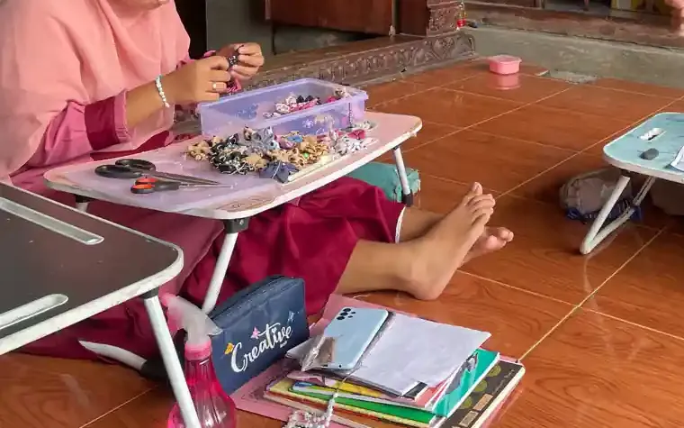
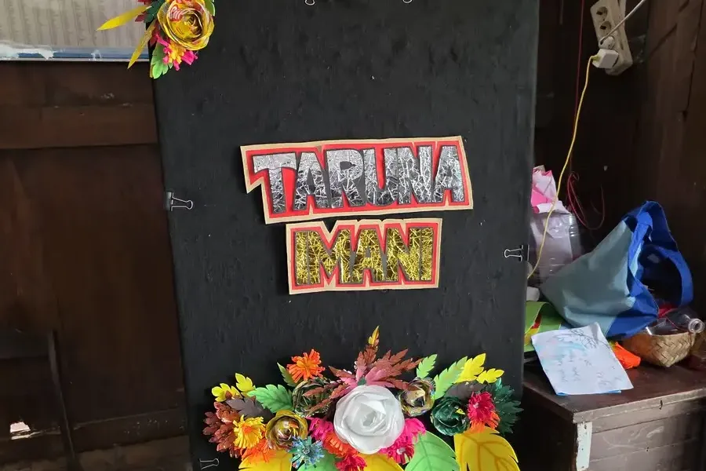

Jawaban singkat: biaya terapi anak autis per bulan tidak punya satu angka baku. Besarnya dihitung dari tarif tiap tindakan terapi dikali jumlah kunjungan dalam sebulan, ditambah pendaftaran, pemeriksaan dokter, dan asesmen. Di rumah sakit pemerintah, tarif per tindakan tercantum di dokumen resmi. Contohnya, di RS Jiwa Grhasia DIY satu latihan terapi wicara tercantum Rp60.000 dan terapi sensori integrasi Rp40.000, sedangkan di RS Jiwa Mutiara Sukma NTB (pola tarif 2024) terapi bahasa dan sensori integrasi masing-masing Rp100.000. Peserta BPJS Kesehatan berhak atas rehabilitasi medis menurut Perpres 82/2018 yang diubah terakhir dengan Perpres 59/2024, selama ada indikasi medis dan mengikuti alur rujukan.
Cara kami menyusun angka di artikel ini
Setiap angka biaya diambil dari dokumen tarif yang dipublikasikan sendiri oleh rumah sakit pemerintah, lengkap dengan nama lembaga dan tahunnya, dan dicek pada 11 Oktober 2026. Kami tidak mencantumkan tarif klinik swasta atau lembaga terapi karena tidak ada daftar resmi bertanggal yang bisa diperiksa pembaca. Untuk lembaga seperti itu, kami jelaskan faktor yang menentukan biayanya.
Daftar Isi
- Komponen biaya terapi anak autis
- Biaya diagnosis dan asesmen awal
- Tarif terapi di RS pemerintah: dua contoh
- Cara menghitung biaya per bulan
- Klinik swasta dan terapi ABA: apa yang menentukan biaya
- Terapi anak autis dengan BPJS Kesehatan
- Cara mengatur biaya agar program berkelanjutan
- Pertanyaan yang sering diajukan
Komponen biaya terapi anak autis
Autisme bukan kondisi yang ditangani dengan satu jenis terapi saja. Halaman pengobatan autisme dari CDC membagi pendekatannya ke beberapa kelompok, antara lain pendekatan perilaku seperti applied behavior analysis (ABA), pendekatan perkembangan seperti terapi wicara dan okupasi terapi (termasuk terapi sensori integrasi), serta pendekatan psikologis. CDC juga menyebut terapi wicara sebagai terapi perkembangan yang paling umum untuk orang dengan autisme. Penjelasan tiap jenis terapi ada di artikel terapi wicara, terapi okupasi, sensori integrasi, dan terapi ABA.
Karena programnya sering menggabungkan beberapa terapi, biaya bulanan biasanya terdiri dari:
- Biaya awal (sekali di depan): pemeriksaan dokter, skrining atau tes perkembangan, dan asesmen oleh terapis.
- Biaya rutin per kunjungan: tarif tiap tindakan terapi ditambah biaya pendaftaran atau registrasi.
- Biaya berkala: kontrol dokter dan asesmen ulang untuk menilai kemajuan.
- Biaya pendukung: transportasi, waktu orang tua yang mendampingi, dan bahan latihan di rumah.
Komponen mana yang dibutuhkan anak Anda ditentukan lewat pemeriksaan dan asesmen anak berkebutuhan khusus. Itulah sebabnya dua anak dengan diagnosis yang sama bisa punya biaya bulanan yang sangat berbeda.
Biaya diagnosis dan asesmen awal
Sebelum terapi dimulai, anak biasanya diperiksa dokter dan menjalani skrining atau tes. Berikut contoh tarif dari daftar tarif resmi RS Jiwa Grhasia milik Pemerintah Daerah DIY:
| Layanan | Rumah sakit | Tarif |
|---|---|---|
| Pemeriksaan dokter spesialis jiwa (Poliklinik Jiwa Anak) | RS Jiwa Grhasia DIY | Rp97.000 |
| Kunjungan dan konsultasi klinik spesialis (Tumbuh Kembang Anak) | RS Jiwa Grhasia DIY | Rp97.000 |
| Pemeriksaan DDST (Denver Development Screening Test) | RS Jiwa Grhasia DIY | Rp48.000 |
| Skrining anak (Test Psikologi) | RS Jiwa Grhasia DIY | Rp40.000 |
| Asesmen terapi wicara | RS Jiwa Grhasia DIY | Rp30.000 |
Sumber: Tarif Pelayanan RS Jiwa Grhasia DIY (ruangan Poliklinik Jiwa Anak, Tumbuh Kembang Anak, Test Psikologi, dan Terapi Wicara). Diakses 11 Oktober 2026.
Tidak semua anak menjalani semua tes di atas. Dokter yang menentukan pemeriksaan apa yang diperlukan. Rincian biaya pemeriksaan psikologi dibahas di artikel tes psikolog anak bayar berapa, dan gambaran umum autisme ada di autisme adalah.
Tarif terapi di RS pemerintah: dua contoh
Rumah sakit milik pemerintah daerah menetapkan tarifnya lewat peraturan kepala daerah atau dokumen tarif resmi, sehingga angkanya bisa berbeda cukup jauh antar daerah. Tabel berikut membandingkan tindakan yang paling sering dijalani anak autis di dua rumah sakit jiwa milik pemerintah provinsi. Semua tarif adalah tarif per tindakan.
| Tindakan | RS Jiwa Grhasia DIY | RS Jiwa Mutiara Sukma NTB (Pergub NTB 51/2019 jo. 7/2021) |
|---|---|---|
| Terapi sensori integrasi | Rp40.000 | Rp100.000 |
| Terapi wicara: latihan bahasa | Rp60.000 (latihan bahasa reseptif atau ekspresif) | Rp100.000 (terapi bahasa) |
| Oral motor | Rp60.000 (latihan oral motor) | Rp50.000 (oral motor therapy) |
| Okupasi terapi: kemandirian sehari-hari | Rp35.000 (terapi ADL) | Rp100.000 (terapi ADL) |
| Terapi perilaku atau bermain | Rp40.000 (terapi perilaku / bermain / leisure, ruangan OT) | Rp150.000 (behavior therapy atau play therapy oleh dokter subspesialis jiwa anak) |
| Floor time | Tidak tercantum dengan nama ini | Rp100.000 |
Sumber: Tarif RS Jiwa Grhasia DIY ruangan OT dan ruangan Terapi Wicara (tarif sama untuk semua kelas); Pola Tarif RSJ Mutiara Sukma Tahun 2024, bagian Pelayanan Tumbuh Kembang Anak Remaja, yang angkanya sama dengan lampiran Pergub NTB Nomor 7 Tahun 2021 (perubahan atas Pergub NTB Nomor 51 Tahun 2019, keduanya berstatus berlaku di JDIH BPK). Diakses 11 Oktober 2026.
Dua catatan penting. Pertama, nama tindakan di tiap dokumen tidak selalu sama persis, jadi perbandingan di atas bersifat mendekati. Kedua, halaman tarif RS Jiwa Grhasia tidak mencantumkan nomor peraturan yang menjadi dasarnya, dan tarif bisa diperbarui sewaktu-waktu. Tanyakan tarif yang berlaku ke bagian informasi rumah sakit sebelum memulai program. Tarif terapi wicara dibahas lebih rinci di berapa biaya terapi bicara anak, dan gambaran biaya terapi untuk kebutuhan khusus lain ada di berapa biaya terapi anak berkebutuhan khusus.
Cara menghitung biaya per bulan
Rumus sederhananya:
Biaya per bulan = (jumlah tarif semua tindakan dalam satu kunjungan + biaya pendaftaran) x jumlah kunjungan per bulan + kontrol dokter atau asesmen ulang bila dijadwalkan bulan itu.
Contoh di bawah hanya ilustrasi cara menghitung dengan tarif resmi di atas. Jenis terapi dan jumlah kunjungan yang sebenarnya ditentukan dokter dan terapis setelah asesmen, bukan oleh contoh ini.
| Ilustrasi | Isi satu kunjungan | Per kunjungan | 4 kunjungan per bulan | 8 kunjungan per bulan |
|---|---|---|---|---|
| RS Jiwa Grhasia DIY | Latihan bahasa ekspresif Rp60.000 + terapi sensori integrasi Rp40.000 + registrasi rawat jalan Rp15.000 | Rp115.000 | Rp460.000 | Rp920.000 |
| RS Jiwa Mutiara Sukma NTB | Terapi bahasa Rp100.000 + sensori integrasi Rp100.000 (biaya pendaftaran tidak kami hitung karena tidak kami temukan di dokumen yang sama) | Rp200.000 | Rp800.000 | Rp1.600.000 |
Pada bulan pertama, tambahkan biaya awal. Misalnya di RS Jiwa Grhasia DIY: pemeriksaan dokter spesialis jiwa Rp97.000 dan asesmen terapi wicara Rp30.000, sehingga bulan pertama ilustrasi Grhasia dengan empat kunjungan menjadi Rp587.000. Registrasi di ilustrasi Grhasia dihitung sekali per kunjungan. Tanyakan ke rumah sakit apakah registrasi ditagih per ruangan terapi, karena itu akan menambah angkanya.
Hitungan ini juga belum memasukkan transportasi dan waktu orang tua. Untuk keluarga yang tinggal jauh dari rumah sakit, komponen ini sering terasa sama berat dengan tarif terapinya.


Klinik swasta dan terapi ABA: apa yang menentukan biaya
Banyak keluarga menjalani terapi di klinik tumbuh kembang swasta atau lembaga terapi perilaku. Lembaga seperti ini menetapkan tarif sendiri dan umumnya tidak mempublikasikan daftar harga resmi bertanggal, jadi kami tidak mencantumkan angka. Biayanya bervariasi, dan faktor yang paling menentukan adalah:
- Intensitas program. Program perilaku seperti ABA bisa dijalankan dalam jumlah jam yang jauh lebih banyak per minggu dibanding terapi wicara atau okupasi di rumah sakit. Makin banyak jam, makin besar biayanya.
- Bentuk tarif. Ada yang menagih per sesi, per jam, atau per paket bulanan. Paket bisa tampak murah per sesi, tetapi mengikat untuk jangka panjang.
- Kualifikasi terapis. Terapis bersertifikat atau program yang diawasi supervisor biasanya bertarif lebih tinggi. Lihat lembaga sertifikasi terapis anak di Indonesia.
- Lokasi dan tempat terapi. Kota, sesi di klinik atau di rumah (home visit), serta biaya asesmen dan laporan berkala.
- Kerja sama dengan BPJS. Lembaga yang tidak bekerja sama dengan BPJS Kesehatan berarti seluruh biaya ditanggung keluarga (lihat bagian BPJS di bawah).
Sebelum menandatangani paket apa pun, mintalah rincian tertulis: tindakan apa saja per sesi, berapa jam per minggu, berapa lama programnya, kapan evaluasi dilakukan, dan apa kebijakan bila sesi batal. Daftar layanan terapi di Yogyakarta ada di tempat terapi anak Jogja. Waspadai juga tawaran terapi mahal yang belum terbukti, misalnya yang dibahas di artikel stem cell therapy untuk autisme.
Terapi anak autis dengan BPJS Kesehatan
Dasar hukumnya. Peraturan Presiden Nomor 82 Tahun 2018 tentang Jaminan Kesehatan Pasal 46 ayat (1) menyatakan peserta berhak atas manfaat yang mencakup pelayanan promotif, preventif, kuratif, dan rehabilitatif sesuai kebutuhan medis. Pasal 47 ayat (1) huruf b angka 7 memasukkan rehabilitasi medis ke dalam pelayanan kesehatan rujukan tingkat lanjutan yang dijamin. Ketentuan rehabilitasi medis ini tetap tercantum setelah Pasal 47 diubah oleh Perpres Nomor 59 Tahun 2024, yang berstatus berlaku di JDIH BPK. Terapi wicara dan okupasi terapi di rumah sakit termasuk layanan rehabilitasi medik.
Yang tidak dijamin. Pasal 52 ayat (1) Perpres 82/2018 menyebut, antara lain, pelayanan di fasilitas kesehatan yang tidak bekerja sama dengan BPJS Kesehatan (kecuali darurat) dan pengobatan komplementer, alternatif, dan tradisional yang belum dinyatakan efektif berdasarkan penilaian teknologi kesehatan. Artinya, program di lembaga terapi yang tidak bekerja sama dengan BPJS umumnya dibayar sendiri.
Alurnya secara umum:
- Pastikan kepesertaan anak aktif.
- Datang ke Puskesmas atau dokter keluarga tempat anak terdaftar, lalu minta rujukan ke rumah sakit yang punya layanan tumbuh kembang atau rehabilitasi medik.
- Di rumah sakit, dokter spesialis memeriksa anak dan menentukan apakah terapi diperlukan, jenisnya, dan frekuensinya.
- Tanyakan ke petugas BPJS di rumah sakit berapa kali terapi yang dijamin dan kapan rujukan perlu diperpanjang.
Catatan soal batas usia. Pada 13 Juni 2024, Kontan melaporkan keluhan tentang pembatasan rehabilitasi medis bagi anak berkebutuhan khusus berusia tujuh tahun. Menurut laporan itu, BPJS Kesehatan menyatakan pembatasan tersebut bukan kebijakan langsung BPJS, melainkan mengikuti standar perhimpunan dokter spesialis kedokteran fisik dan rehabilitasi (Perdosri). Seorang anggota DPR dalam laporan yang sama menilai pembatasan itu bertentangan dengan UU SJSN dan Perpres jaminan kesehatan. Kami tidak menemukan aturan resmi yang menuliskan batas usia tersebut. Karena itu, tanyakan ketentuan terbaru langsung ke petugas BPJS di rumah sakit tujuan atau kantor cabang BPJS Kesehatan sebelum program dimulai. Bantuan lain untuk keluarga dirangkum di program pemerintah untuk ABK.
Cara mengatur biaya agar program berkelanjutan
Terapi autis adalah perjalanan panjang. Program yang bisa dijalani rutin selama berbulan-bulan sering lebih berguna daripada program intensif yang berhenti di tengah jalan karena biaya. Beberapa langkah yang bisa membantu:
- Mulai dari asesmen. Terapi yang tepat sasaran lebih hemat daripada mencoba banyak terapi sekaligus.
- Bandingkan dokumen tarif resmi. Seperti terlihat di atas, tindakan yang sama bisa berbeda lebih dari dua kali lipat antar rumah sakit.
- Manfaatkan jalur BPJS bila anak memenuhi syarat, dan simpan semua surat rujukan serta hasil pemeriksaan.
- Lanjutkan latihan di rumah. Sesi terapi hanya beberapa jam per minggu. Mintalah pekerjaan rumah dari terapis dan jalankan dalam kegiatan sehari-hari. Idenya ada di terapi integrasi sensorik di rumah dan tips mendampingi anak autis.
- Catat perkembangan. Catatan kemajuan membantu terapis memutuskan kapan frekuensi bisa dikurangi atau jenis terapi diganti.

Bila Anda di Sleman atau Yogyakarta dan ingin berdiskusi tentang pendampingan pendidikan anak berkebutuhan khusus, silakan hubungi YUKA lewat halaman konsultasi ABK di Sleman atau kontak. Informasi sekolah ada di halaman Sekolah Inklusi Taruna Imani di Sleman.

Pertanyaan yang Sering Diajukan
Berapa biaya terapi anak autis per bulan?
Tidak ada satu angka yang berlaku untuk semua anak. Biaya bulanan dihitung dari tarif tiap tindakan dikali jumlah kunjungan. Contoh dari tarif resmi: satu latihan terapi wicara (Rp60.000) dan satu terapi sensori integrasi (Rp40.000) di RS Jiwa Grhasia DIY ditambah registrasi Rp15.000 menjadi Rp115.000 per kunjungan, atau Rp460.000 bila empat kali sebulan. Jenis dan frekuensi terapi yang sebenarnya ditentukan dokter dan terapis setelah asesmen, dan tarif klinik swasta bervariasi.
Apakah terapi anak autis ditanggung BPJS Kesehatan?
Perpres 82 Tahun 2018 yang diubah terakhir dengan Perpres 59 Tahun 2024 memasukkan rehabilitasi medis ke dalam pelayanan rujukan tingkat lanjutan yang dijamin. Terapi wicara dan okupasi terapi di rumah sakit yang bekerja sama dengan BPJS dapat dijamin bila ada indikasi medis dan mengikuti alur rujukan. Pada 2024 Kontan melaporkan pembatasan untuk sebagian anak di atas tujuh tahun, jadi tanyakan ketentuan terbaru ke petugas BPJS di rumah sakit tujuan.
Kenapa tarif terapi autis berbeda antar rumah sakit?
Setiap rumah sakit daerah menetapkan tarif lewat peraturan kepala daerah atau dokumen tarifnya sendiri. Contohnya, terapi sensori integrasi tercantum Rp40.000 di daftar tarif RS Jiwa Grhasia DIY dan Rp100.000 di RS Jiwa Mutiara Sukma NTB (Pergub NTB 51/2019 yang diubah dengan Pergub 7/2021, dipublikasikan ulang sebagai pola tarif 2024).
Apakah terapi ABA di klinik swasta ditanggung BPJS?
Perpres 82/2018 Pasal 52 menyebut pelayanan di fasilitas kesehatan yang tidak bekerja sama dengan BPJS Kesehatan tidak dijamin, kecuali darurat. Jadi program terapi di lembaga yang tidak bekerja sama dengan BPJS umumnya dibayar sendiri. Tanyakan langsung ke lembaga dan BPJS untuk kepastian.
Biaya apa saja yang perlu disiapkan di luar sesi terapi?
Siapkan juga biaya pendaftaran, pemeriksaan dokter, asesmen awal dan asesmen ulang, tes psikologi bila diminta, transportasi, serta bahan latihan di rumah. Di RS Jiwa Grhasia DIY misalnya, pemeriksaan dokter spesialis jiwa di Poliklinik Jiwa Anak tercantum Rp97.000 dan asesmen terapi wicara Rp30.000.
Berapa biaya bulan pertama terapi anak autis di RS pemerintah?
Bulan pertama biasanya lebih mahal karena ada biaya awal. Dengan ilustrasi tarif RS Jiwa Grhasia DIY, empat kunjungan berisi latihan bahasa ekspresif, terapi sensori integrasi, dan registrasi berjumlah Rp460.000. Bila ditambah pemeriksaan dokter spesialis jiwa Rp97.000 dan asesmen terapi wicara Rp30.000, bulan pertama menjadi Rp587.000. Angka ini hanya contoh cara menghitung. Jenis dan jumlah terapi ditentukan dokter dan terapis.
Apa yang perlu ditanyakan sebelum mengambil paket terapi di klinik swasta?
Mintalah rincian tertulis: tindakan apa saja dalam satu sesi, berapa jam per minggu, berapa lama programnya, kapan evaluasi dilakukan, dan apa kebijakan bila sesi batal. Tanyakan juga apakah lembaga itu bekerja sama dengan BPJS Kesehatan, karena layanan di fasilitas yang tidak bekerja sama umumnya dibayar sendiri.
Bacaan Terkait
Tentang artikel ini
- Ditulis oleh: Tim YUKA (Yayasan Ukhuwah Kaffah Amanatullah), pengelola Sekolah Inklusi Taruna Imani, Sleman, Yogyakarta.
- Dasar rujukan: daftar tarif resmi RS Jiwa Grhasia DIY (grhasia.jogjaprov.go.id) dan RS Jiwa Mutiara Sukma NTB (rsmutiarasukma.ntbprov.go.id) beserta Pergub NTB 51/2019 jo. 7/2021; Perpres 82/2018 dan Perpres 59/2024 dari JDIH BPK (peraturan.bpk.go.id); cdc.gov; dan laporan Kontan. Semua rujukan ditautkan di bagian sumber di bawah.
- Terbit: 11 Oktober 2026. Pembaruan terakhir: 11 Oktober 2026.
- Catatan koreksi (11 Oktober 2026): versi pertama artikel ini memuat tarif RSUD Kota Yogyakarta dari Peraturan Wali Kota Yogyakarta yang ternyata sudah dicabut oleh Peraturan Wali Kota Yogyakarta Nomor 30 Tahun 2025. Semua tarif RSUD Kota Yogyakarta sudah kami hapus dari tabel, FAQ, dan daftar sumber karena kami belum menemukan dokumen tarif pengganti yang dipublikasikan.
- Status tinjauan medis: artikel ini disusun oleh tim pendidik, belum ditinjau oleh tenaga kesehatan berizin. Tinjauan oleh tenaga kesehatan berkredensial sedang kami siapkan dan status ini akan diperbarui di halaman ini begitu selesai. Alur tinjauan dan koreksi dijelaskan di Kebijakan Editorial YUKA. Untuk diagnosis, terapi, atau rencana intervensi, rujuklah pada dokter, psikolog, atau terapis yang menangani anak Anda.
- Kebijakan koreksi: jika Anda menemukan angka yang keliru, tarif yang sudah berubah, atau sumber yang tidak cocok, beri tahu kami lewat halaman kontak. Kami memperbaiki isinya dan mencantumkan catatan koreksi secara terbuka.
Sumber dan Referensi
- RS Jiwa Grhasia DIY: Tarif Pelayanan, ruangan Terapi Wicara
- RS Jiwa Grhasia DIY: Tarif Pelayanan, ruangan OT (Okupasi Terapi)
- RS Jiwa Grhasia DIY: Tarif Pelayanan, Poliklinik Jiwa Anak
- RS Jiwa Grhasia DIY: Tarif Pelayanan, Tumbuh Kembang Anak
- RS Jiwa Grhasia DIY: Tarif Pelayanan, Test Psikologi
- Peraturan Gubernur NTB Nomor 7 Tahun 2021 tentang Perubahan atas Pergub Nomor 51 Tahun 2019 tentang Tarif Layanan Kesehatan pada RSJ Mutiara Sukma, JDIH BPK
- RS Jiwa Mutiara Sukma NTB: Pola Tarif RSJMS Tahun 2024 (PDF)
- Peraturan Presiden Nomor 82 Tahun 2018 tentang Jaminan Kesehatan, JDIH BPK
- Peraturan Presiden Nomor 59 Tahun 2024 tentang Perubahan Ketiga atas Perpres 82/2018, JDIH BPK
- Kontan (13 Juni 2024): Pemotongan Manfaat BPJS Berisiko Putus Terapi Anak Berkebutuhan Khusus
- CDC: Treatment and Intervention for Autism Spectrum Disorder
Catatan: Artikel ini bersifat edukasi umum dan bukan pengganti saran dokter, psikolog, atau terapis. Semua tarif dicek pada 11 Oktober 2026 dan bisa berubah lewat peraturan baru. Konfirmasi tarif dan ketentuan BPJS ke rumah sakit sebelum memulai terapi. Contoh hitungan di artikel ini adalah ilustrasi, bukan perkiraan biaya untuk anak tertentu.